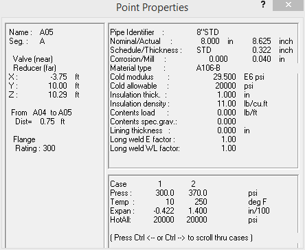
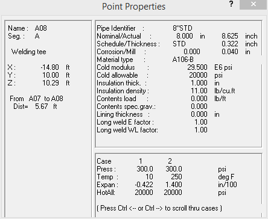
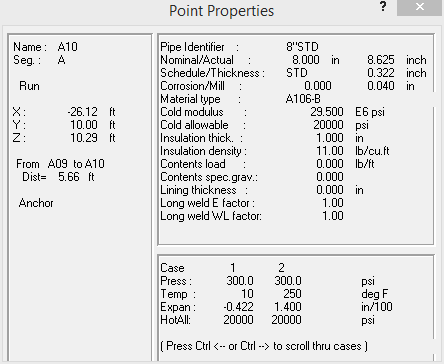

Select View > Information > Point Properties.
- The Point Properties information window appears as shown in the following figure.

- The Point Properties information dialog can be left open while working with a model to provide continuous feedback on the selected point. This dialog can also move outside the main application window (provided the AutoPIPE application is not maximized to full window size).
Place the cursor in the title bar of the dialog, then press and hold the mouse button and “drag” it outside the main modeling area as shown in the following figure. Leave this window open to view additional point information.
- Pick point A08 to display its point properties.

- Pick point A01N to display its point properties.

| Note: |
The TIP of the bend is A01. Bends also have two other points defined for the near (N) and far (F) sides of the bend. Thus, A01 N is the near point of the bend on the side closest to the anchor at point A00. |
- In addition to picking points in the model for review, you can also use the cursor keys to move from point to point. The information dialog will update as the cursor advances to each new point. For example, press the left arrow to review the data associated with point A00.
- Press the right arrow cursor key several times and note how the information dialog is updated for each of the points.
- You can also use the keyboard to “jump” the cursor to a different segment. Press Page Up and notice that the starting point of Segment B, A07, is now highlighted. The left and right arrow keys can now be used to review the properties of points along Segment B.
-
.jpg) Close the
information dialog.
Close the
information dialog. - Select File > Save > Save to save the model.